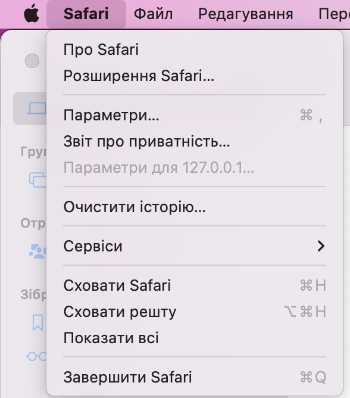
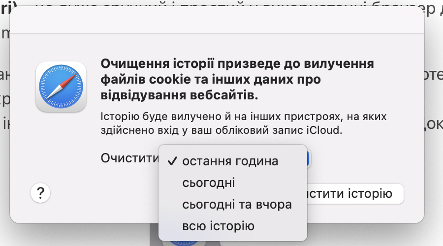

Кеш браузера Safari - це місце, де тимчасово зберігається інформація з відвіданих вами веб-сайтів, щоб швидше завантажувати їх при наступному відвідуванні. Коли ви переходите на веб-сторінку, браузер зберігає туди деякі дані, такі як зображення, тексти і скрипти, щоб при наступному відкритті сторінки не треба було повторно вивантажувати ці дані з Інтернету.
Щоб очистити кеш (очистити історію) Safari на комʼютері мак, слід виконати наступні кроки:
- Запустіть браузер Safari на своєму пристрої.
- У верхній частині екрана виберіть меню "Safari".
- Виберіть "Очистити історію".
- У меню оберіть час за який треба видалити історю (остання година, останній день, сьогодні і вчора, за весь період).
- Натисніть на кнопку "Очистити".


Це може зайняти кілька хвилин, залежно від обсягу кешу, який потрібно видалити. Після виконання цих кроків ваш кеш Safari буде повністю очищений.
Видалення кешу у браузері Safari може бути корисним з кількох причин:
Очистка простору на диску: Кеш Safari може займати значну кількість простору на диску, особливо якщо ви користуєтесь браузером протягом тривалого часу або відвідуєте багато веб-сторінок з великою кількістю зображень та відео.
Виправлення проблем з відображенням веб-сторінок: Інколи кеш браузера може стати причиною проблем з відображенням веб-сторінок, таких як помилки завантаження або неочікувані помилки JavaScript. Видалення кешу може допомогти виправити ці проблеми.
Забезпечення приватності: Кеш Safari може зберігати інформацію про веб-сторінки, які ви відвідали, та інші дані, пов'язані з вашою активністю в Інтернеті. Якщо ви бажаєте зберігати свою приватність, видалення кешу може бути корисним, оскільки це допоможе знизити кількість інформації, яку зберігає браузер.
Видалення кешу Safari може призвести до деяких незручностей, зокрема:
Повільність завантаження веб-сторінок: коли ви видаляєте кеш Safari, він видаляє всі збережені на вашому пристрої файли, які використовуються для швидшого завантаження веб-сторінок. Це означає, що після видалення кешу, веб-сторінки можуть завантажуватися повільніше.
Відсутність доступу до збережених паролів та інформації автозаповнення: Safari також зберігає дані автозаповнення та збережені паролі для веб-сайтів. Якщо ви видаляєте кеш, то також втратите доступ до цих даних. Вам доведеться вручну вводити всю необхідну інформацію знову.
Видалення історії перегляду: видалення кешу також призведе до видалення вашої історії перегляду. Це може бути проблемою, якщо вам потрібно знайти сторінку, яку ви відвідали раніше, історія буде більше не доступною.
Втрата налаштувань: видалення кешу може вплинути на деякі налаштування Safari, такі як розмір шрифту, мову відображення та інші. Вам доведеться знову встановлювати ці налаштування, якщо вони були видалені.
Потреба вводити дані знову: якщо ви видаляєте кеш, то вам доведеться вводити дані для входу на веб-сайти знову, якщо вони не збережені в вашому менеджері паролів.
Читайте більше статей про використання браузеру Сафарі (Safari) на сторінці Як зробити Сафарі своїм улюблений браузером на мак? Багато лайвхаків..